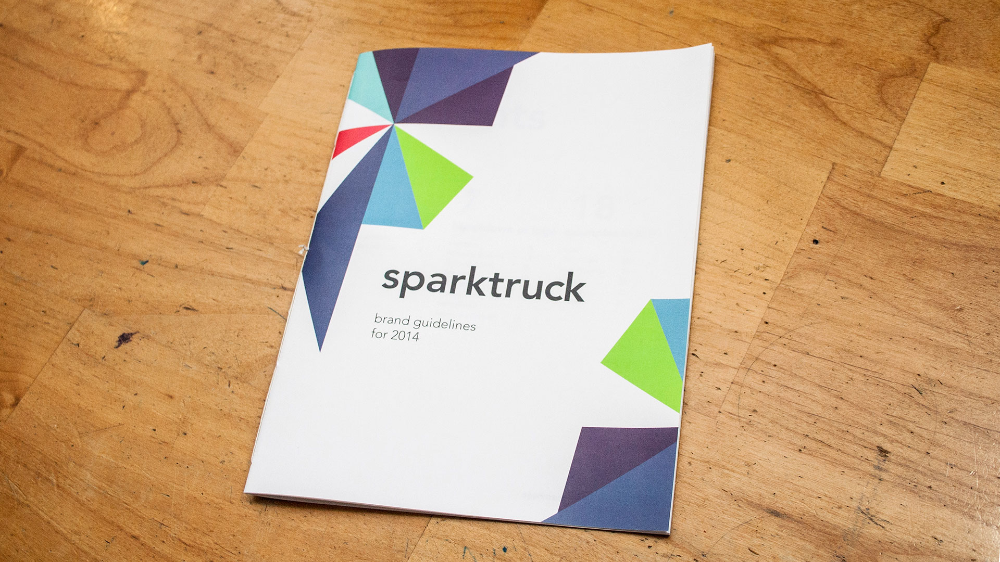
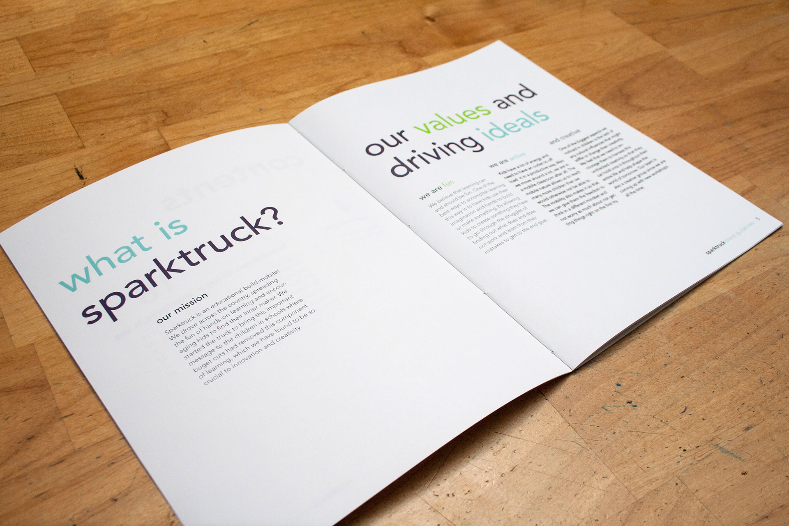
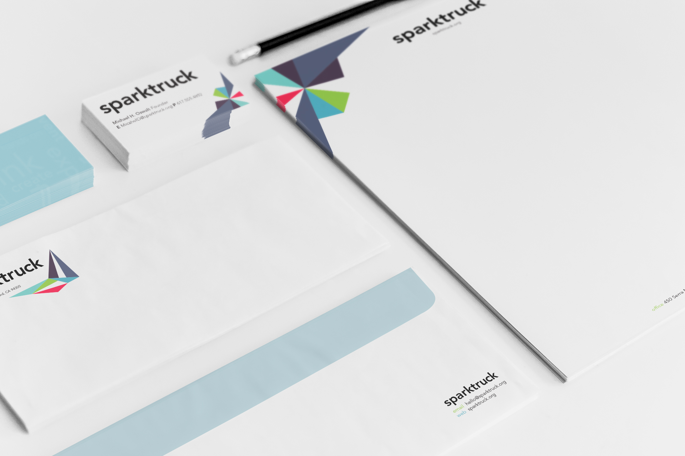
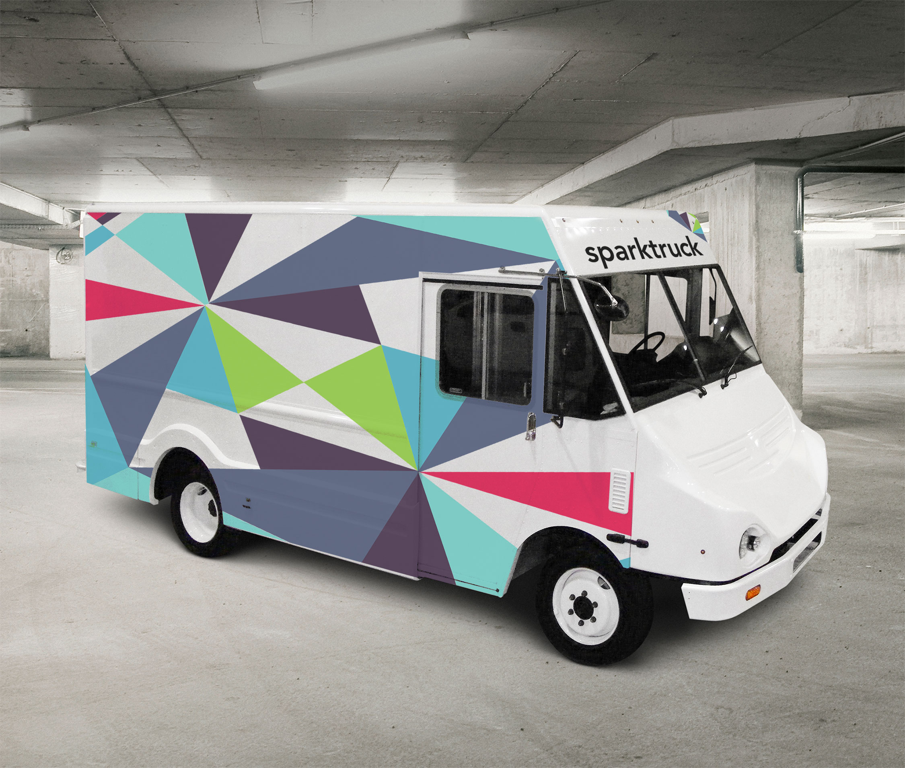

Sparktruck Brand Guidelines
Sparktruck is a project that was put together by a group of grad. students that goes around the country with their truck filled with tools to help inspire creativity in kids. I created a set of brand guidelines to help them spread their message.
With school’s budgets getting cut sparktruck is noble cause and I felt that it would be a great chance to brand a company that would not be as strict on it’s branding and foster that same creativity with it’s designers. Taking their message I created three distinct patterns which were inspired by the crease marks in paper after it had been folded into origami. The patterns are dynamic and active just like the crew aboard the truck and can portray the explosion of creativity coming from the kids after the team leaves the school. Coloration choices were made to be bright and fun in order to help shift the minds of the children when they come out to the truck for the workshops. The brand guidelines break down when and how the logo is used as well as providing examples of the logo in use, these examples include a truck wrap, office suite, shirt design for the crew, web presence as well as promotion flyers intended to creatively inspire people to donate or request the truck to come to their school.
Full PDF Sparktruck Brand Guidelines
   